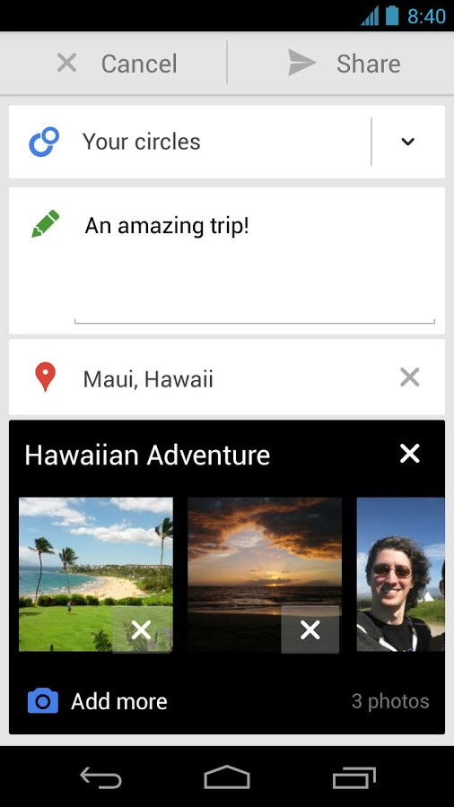
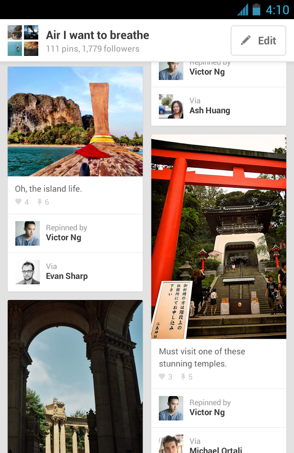
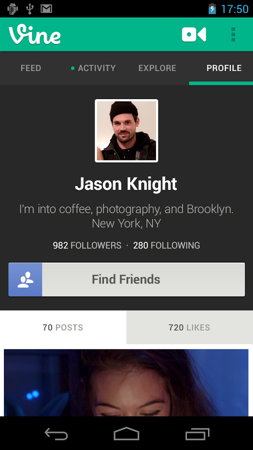
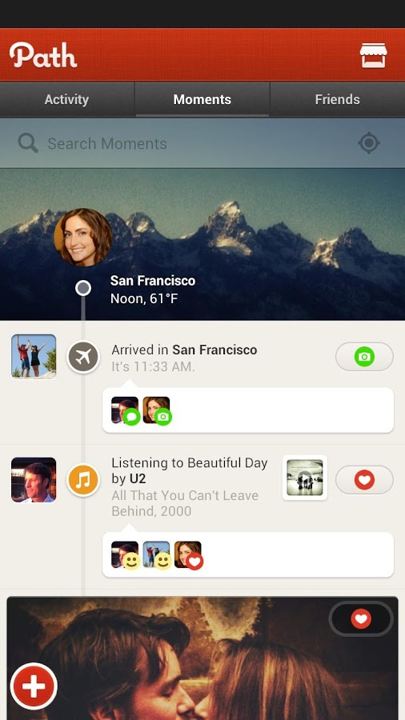

Will Norris
willnorris.com
Why contribute to WordPress
b2 / cafelog
…contributing to open source, and particularly the WordPress project, is probably one of the best learning opportunities on the Internet.

- 
- 

- 
- 
IndieWebCamp
IndieWebCamp
POSSE - Publish (on your) Own Site, Syndicate Elsewhere
PESOS - Publish Elsewhere, Syndicate (to your) Own Site
Self-dogfooding - "Is its creator living and breathing it in his day-to-day online life? If so, awesome, if not, yawn." — Tantek Çelik
Start where you are
Use what you have
Do what you can
Every good work of software starts by scratching a developer's personal itch.

Understanding why you want to contribute often leads naturally to how you ought to contribute.


Not getting paid to work on your passion project can often be more fun.
We're the lucky set of people with the skill and opportunity to make the changes we believe in. So we should.
Thank You!
Will Norris
willnorris.com